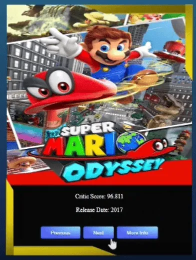
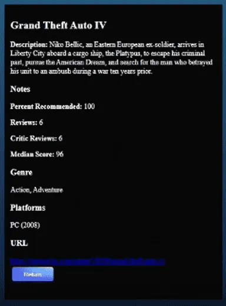

GAME CATOLOG
Uma API projetada para centralizar e simplificar o acesso ao universo dos games. O sistema atua como uma ponte inteligente entre uma grande base de dados global (OpenCritic) e o usuário final, consolidando notas da crítica, plataformas e gêneros em um só lugar. Com um motor de busca dinâmico e endpoints rápidos, a plataforma transforma dados brutos da internet em uma experiência de catálogo fluida, informativa e rica em conteúdo.
ABOUT_PROJECT
O GameCatalog foi projetado para resolver um problema comum no desenvolvimento de software: a dependência de dados externos de terceiros. A camada Client gerencia as chamadas HTTP assíncronas para a API da OpenCritic. Os dados brutos recebidos são imediatamente mapeados por DTOs, garantindo que apenas as informações relevantes entrem no sistema, o que reduz o consumo de memória e o tráfego de rede.
A camada de Service orquestra as regras de negócio e correlaciona entidades como mesclar dados de plataformas e gêneros na rota detalhada do jogo. Por fim, as Controllers expõem esses dados tratados através de uma API REST limpa, documentada e com suporte a buscas customizadas por critérios de texto, garantindo total isolamento entre a API externa e o cliente final.
TECH_STACK
- Java
- Spring Boot
- REST API
- OpenCritic API
- DTO Pattern
- HTTP Client
- JSON Processing
- Swagger
ARCHITECTURE
- Arquitetura em camadas
- Separação de responsabilidades
- Controller / Service / Client
- Data Transfer Object
- Integração externa isolada
FEATURES
- → Consulta de gêneros
- → Detalhes completos do jogo
- → Consumo de API externa
- → Mapeamento de dados externos
DATA_FLOW
- 1. Ação do Usuário: O usuário pesquisa um jogo ou clica em uma categoria no catálogo.
- 2. Gatilho no Backend: O sistema recebe o pedido e busca a informação precisa.
- 3. Consulta Externa: A nossa API conversa com a base de dados da OpenCritic em segundos para coletar as notas e análises.
- 4. Filtragem Inteligente: O sistema joga fora os dados desnecessários trazidos da internet e organiza apenas o que o usuário quer ver.
- 5. Exibição: A tela exibe o jogo com suas respectivas notas, plataformas e descrições de forma rápida e organizada.

USER_FLOW
- 1. Exploração do Catálogo: O usuário acessa a plataforma e visualiza instantaneamente uma lista resumida dos principais jogos com suas respectivas notas da crítica
- 2. Busca Dinâmica: O usuário digita o nome de um jogo específico no campo de pesquisa, ativando uma filtragem inteligente em tempo real.
- 3. Raio-X do Jogo: Ao clicar em um título, o sistema busca e unifica todos os detalhes fundamentais, como sinopse, gêneros e em quais consoles ele está disponível.
- 4. Consumo de Informação Integrado: O usuário navega por uma base global de dados de forma centralizada, rápida e sem precisar sair da aplicação.